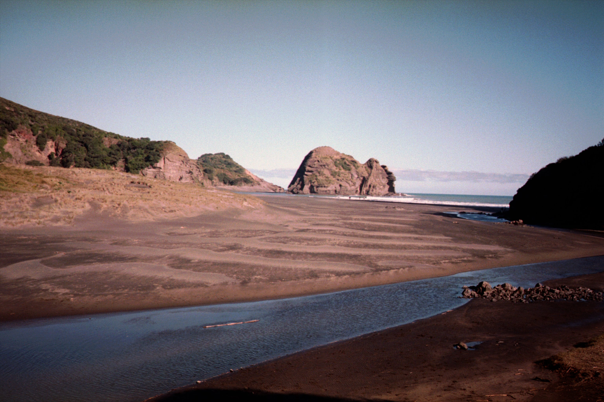

I’m Kirra, a Florida native raised in Satellite Beach currently indexd in Jacksonville. Surfing has been an integral part of my life as I grew up living so close to the water. I developed a deep passion for understanding how the ocean works, especially the science behind surf forecasting.
From wind directions to swell periods and angles. Hurricane season adds another layer of excitement, as I’m constantly tracking storms and watching how they might impact our surf.
Over the years, I’ve had the chance to travel and surf in places like New Zealand and Nicaragua. It’s been an incredible privilege to compare how different regions work with their own unique swell systems and wind patterns. Each spot has its own rhythm, and learning how to read the local conditions has only deepened my love and interest for forecasting.

I earned my degree in computer science from UNF, and combining my passion for surfing with technology this website felt like the perfect tinker project. This website is inspired by my dad’s knowledge of the local surf scene along Florida’s east coast, and all the old websites he used while I was growing up. My ideas for this website is ever growing, so there will be more to come.
.jpg)